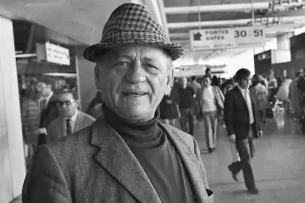

Анрі Шарр'єр — французький письменник, відомий завдяки автобіографічному роману "Метелик", в якому описав свій арешт і неодноразові втечі з колонії у Французькій Ґвіані, а також його сиквелу "Ва-банк".
Майбутній письменник народився 16 листопада 1906 р. у французькій комуні. Він рано залишився без матері, і тільки-но йому виповнилося 17 років, вступив на військову службу до ВМС Франції. Після її закінчення Шарр'єр повернувся до Парижа, одружився. Дружина Анрі Шарр'єра народила йому дочку, проте незабаром подружжя розлучилося. Анрі втягнувся в злочинну діяльність і вже 1931 р. був заарештований. Його звинуватили у вбивстві, засудили до довічного ув'язнення та 10 років каторжних робіт у Гвіані, у смертельно небезпечних для європейця кліматичних умовах. У результаті він провів там 11 років, упродовж яких зробив 9 спроб втечі. Вдев'яте йому вдалося втекти з колонії й дістатися Венесуели. Тут його знову заарештували та засудили до ув'язнення на рік.
Вийшовши на волю, Ані Шарр'єр залишився жити у Венесуелі, одружився з місцевою мешканкою і став вітчимом для її дочки. Успіх супроводжував йому — Анрі вдалося стати господарем трьох готелів, двох ресторанів, прибуткового бізнесу з лову лангустів та креветок. Він став відомим далеко за межами свого міста та країни, був частим гостем на телебаченні. Помер Анрі Шарр'єр у липні 1973 р. від раку горла. Смерть наздогнала письменника в столиці Іспанії — Мадриді. 1973 року його перший роман екранізував режисер Франклін Шеффнер. Головні ролі в фільмі "Метелик" виконали Стів Макквін та Дастін Гоффман. В 2017 році на екрани вийшов однойменний римейк данського режисера Міхаеля Ноера (в головних ролях Чарлі Ганнем та Рамі Малек). Популярність письменнику принесли такі романи: книга "Метелик", надрукована 1969 р. — це автобіографія Анрі Шарр'єра. Принаймні це стверджував сам автор. У ній він розповідає про своє життя, арешт, жорстоких наглядачів у колонії та звільненнях. Письменник заперечує провину у вбивстві, але визнається в скоєнні інших невеликих злочинів; мемуари "Ва-банк", видані 1972 р. Шарр'єр розповідає у яких, як жив після визволення. Він брав участь у політичних змовах, розвивав бізнес, намагався пограбувати банк, і лише неймовірне везіння врятувало його від повторного ув'язнення.